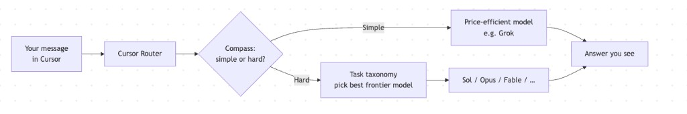
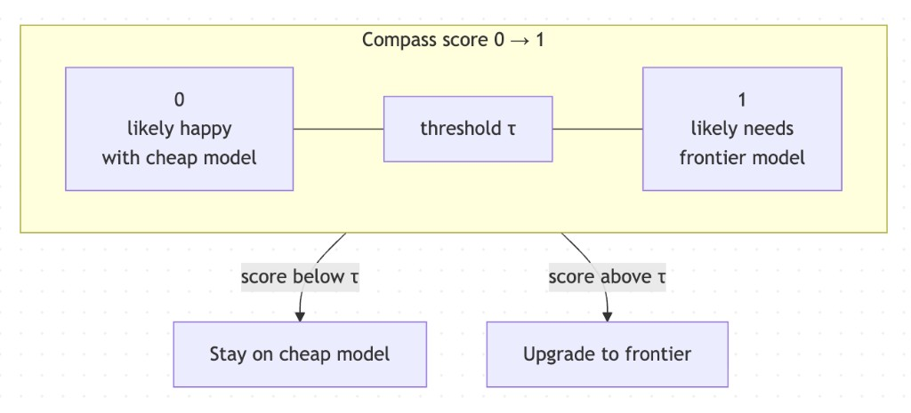
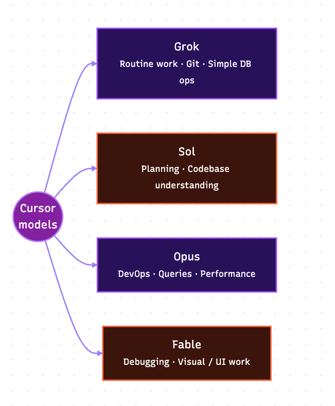
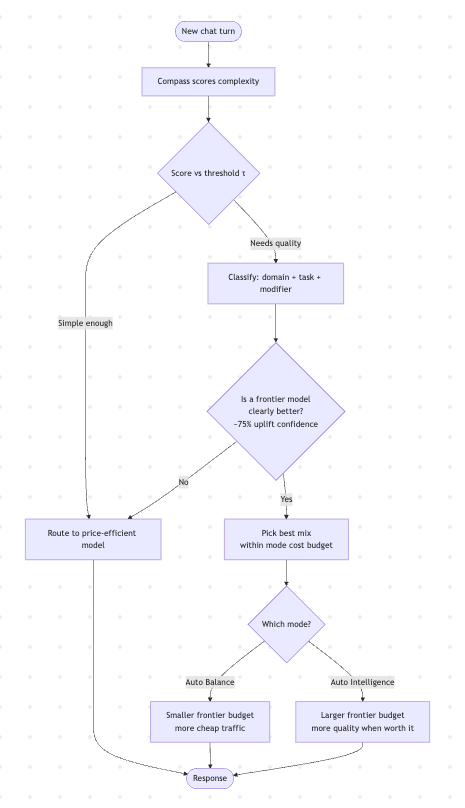
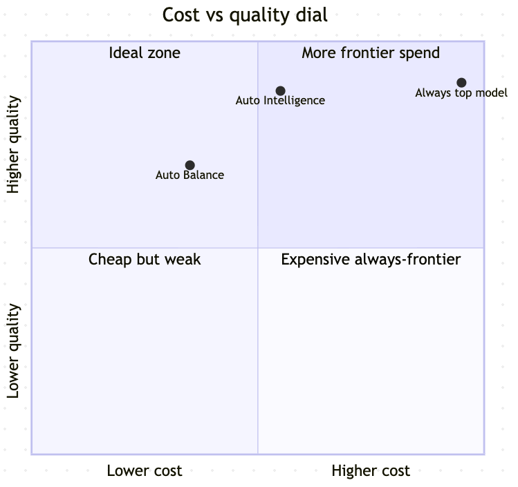

Writing / How Cursor Router picks the right model (explained simply)
AI infrastructure
How Cursor Router picks the right model (explained simply)
How Cursor Router works: Compass complexity scoring, model strengths, Auto Balance vs Auto Intelligence, and why routing beats always picking the biggest model.
Cursor lets you use many AI models — some cheap and fast, some expensive and very smart. The hard question is: which model should answer this message?
If you always pick the strongest model, quality is high but bills explode. If you always pick the cheap one, simple work is fine but hard work breaks.
Cursor Router solves this. For every turn in the chat, it looks at what you asked, how complex it looks, and which model has historically done that kind of work well — then routes the request accordingly.
This post is a plain-English walkthrough of Cursor’s research blog on how that system works.
The big idea
Don’t choose models from leaderboard scores alone. Choose from real developer traffic — what people actually ask Cursor to do, and whether they seemed happy with the answer.
Routing then happens in two steps:
- Is this turn simple? If yes → use a cheap, efficient model.
- If it’s hard, which frontier model fits best? Match the task type to the model that wins on that type.

How they know if a response was “good”
Cursor built a big dataset from live usage (with privacy settings respected). For each turn they track two things:
- Performance signal — Did you move on to the next task? That’s a good sign. Did you correct the agent? That’s a bad sign.
- Cost — Real API price + tokens used, including messy costs like cache misses when switching models.
So the router is trained on “what made developers happy in the real world,” not only on synthetic benchmarks.
Compass: the complexity detector
Compass is a model that scores each turn from 0 to 1 — roughly, “how likely is the user to be satisfied with a cheap model’s answer?”
Simple work (make a commit, rename a variable) usually needs no correction → Compass says “easy.” Hard work (big refactor, subtle bug) often needs follow-ups → Compass says “complex.”
Cursor sets a threshold on that score:
- Below the line → stay on the cheap model (e.g. Grok for routine work).
- Above the line → upgrade to a frontier model.
Raise the threshold → more traffic stays cheap (lower cost, a bit more risk on quality). Lower it → upgrade more often (higher quality, higher cost).

Different models win at different jobs
When Compass says “this needs a strong model,” the next question is which one. Cursor labels each turn with three kinds of tags learned from real work:
- Domain — where the work lives (backend, frontend, database…)
- Task — what you want (fix a bug, write tests, run commands…)
- Modifier — extra flavor (small bounded edit, visual-heavy UI, product question…)
No single model wins everything. Roughly from Cursor’s findings:
- Grok — great value for broad, routine work (git, simple DB ops).
- Sol — strong at planning and understanding a codebase.
- Opus — strong on execution-heavy work (devops, queries, performance).
- Fable — shines at debugging and visual / UI-heavy implementation.

The routing algorithm (simple version)
- Compass scores the turn.
- If score says “simple enough” → send to the price-efficient model.
- If not → look at the task label and pick a frontier model only if it’s clearly better than the cheap option (they use a ~75% confidence uplift bar — don’t upgrade for tiny / doubtful gains).
- Among eligible models, pick a mix that maximizes expected quality within a cost budget.

Auto Balance vs Auto Intelligence
Same router, different knobs on the cost–quality dial:
- Auto Balance — keeps more turns on the cheap path; smaller budget for frontier models. Aim: beat a strong baseline model on happiness, at much lower cost.
- Auto Intelligence — more room to call frontier models when the gain is worth it. Aim: near top-tier satisfaction, still far cheaper than always using the top model.

Cursor reports (as of their Aug 2026 write-up) that Auto Intelligence can sit above Fable-level satisfaction at ~68% lower cost, and Auto Balance can beat Opus 4.8 satisfaction at ~41% lower cost — numbers that keep improving as they retrain on more traffic.
Why this matters (beyond Cursor)
If you’re building any AI product with multiple models, the same pattern shows up:
- Classify complexity before you spend money.
- Learn model strengths from your own users, not only from public benches.
- Only upgrade when the uplift is statistically real.
- Put an explicit budget on the “smart path.”
- Keep re-evaluating online — offline sims miss cache, switching cost, and real behavior.
That’s the mental model of a production LLM router: not “pick the best model,” but “pick the best model for this turn under this budget.”
TL;DR
Cursor Router is a smart traffic cop for AI models. Compass decides if the request is easy or hard. If hard, a task taxonomy picks the frontier model that historically wins on that job — but only when the upgrade is clearly worth the cost. Auto Balance and Auto Intelligence are two settings on that same system.
Source & deeper detail: How Cursor Router chooses the right model for the task (Connor O’Keefe & Yuri Volkov, Cursor Research). This post is my simplified notes for engineers — not an official Cursor document.
Related reading
- Coding is dying. What comes next? — wealth playbook and career shift for software engineers
- Cheap intelligence, expensive trust — when to use DeepSeek/GLM/Kimi vs Claude/OpenAI
- AI Systems Consulting — production agent sprints and systems advisory
- Get in touch to discuss production LLM routing